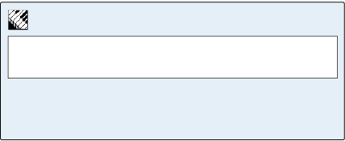
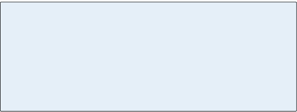

-
copyright
© 2014, Ars Nova Software, LLC
Other than use within a licensed copy of Practica Musica ® or the Exploring Theory ebook, no part of this book may be reproduced, stored in a retrieval system, or transcribed, in any form or by any means, electronic, mechanical, photocopying, recording, or otherwise, without the prior written permission of the publisher, Ars Nova Software, LLC, Box 3370, Redmond, WA 98073.
www.ars-nova.com. 1st and 2nd editions © 1999, 2000, 2004, 2006, 3rd Edition 2011, 4th Edition 2014. Some material in this
book previously appeared in Windows on Music, © 1989, 1994 Ars Nova Software. ISBN 978-0-929-444-130i
-
foreword
This text is designed to accompany the computer program Practica Musica®, version 6 or later, though it can easily
be used alone. Practica Musica supports the text by offering learning activities coordinated with each chapter of the book, helping the student to find the reality behind the abstractions
of pitch, harmony, and rhythm. In addition, there are activities, including even notation tools, for students who want to continue to more advanced topics. However, this book’s
audiovisual examples and interactive quizzes can on their
own provide some of that extra reinforcement and stimulus
and will help to clarify each lesson even without the software.For more information about Practica Musica visit:
www.ars-nova.com.The subject matter covered in the text is that of an introductory music theory course, though some chapters will at times go well beyond the essentials of an introduction. Similarly, the software has something for both beginners and more advanced students: the higher levels of play in each activity can be challenging to anyone, while the correction capabilities and friendly patience of the computer should help even the shyest novice.
This 4th edition of Exploring Theory contains extensive revisions and additions to the text, and features many new music examples presented as videos. The ability to see music examples animated and played offers exciting new potential for
the student. One aspect of the printed book that could be missed, is the written worksheets, so we have provided those
at ars-nova.com as printable files. Certain tasks, after all, are best done by hand for reasons both practical and aesthetic. Worksheet keys are available through Ars Nova.If students are able to practice their basic skills with the computer there will be more time in class for those things a computer can’t do, which include both discussion with the instructor and group activities such as singing in parts.
As before, I’d like to thank the school where I did my graduate work, the University of California at Santa Barbara; it was there in 1986 that the first version of Practica Musica was written, with the aid of a grant from the Office of Instructional Development.
ii
A Practica Musica activity from Chapter 6:
Suggested Practica Musica Activities 6.1
• Relative Keys: Provide the relative major or minor for
the given key.The activities are grouped by chapter in Practica Musica’s Exploring Theory menu.
-
iii
I want to give special thanks to Patricia Carbon for her tireless work both in traditional editing tasks and especially in the
work of reshaping Exploring Theory as an ebook production and in selecting, creating and voicing the many new music examples.
Cynthia Dwyer was of great help in transferring the 4th edition to an online format and proofing copy; Paul Tolo provided many hours of expertise in the conversion of the layout and video content for use with html5.I would also like to express my appreciation for all those professors and music instructors who have written over the years either with corrections or with new ideas for the text and the software. Both are better for it. – J. Evans
-
introduction
Our object of study is the musical language developed in
Europe over the course of the last 1000 years, particularly
the tonal music that is associated with such composers as
Bach, Mozart and Beethoven and which also forms the basis of
modern popular music. What we want to learn first about this
language of sound is its notation: how to read it and how to
write down what we hear or imagine in a way that can be easily
understood by others. Along the way to musical literacy we’ll
gain some insights into how tonal music came to be, and we’ll
acquire familiarity with its basic materials: the beat, the
measure, major and minor scales, and triads. We’ll study the
way that the basic materials of music are built into melody and
harmony, the way that musical forms arise from those
materials, and describe principles that can help you to write
music of your own. If you take an interest in traditional music
of other cultures, or in western jazz or contemporary music,
you will find that this knowledge retains its usefulness.From the autograph manuscript of J.S. Bach’s Brandenburg Concerto No. 5
-
Chapter 1
Notation of Pitch
The two basic elements of music are
pitch and rhythm. "Pitch" refers to the perceived highness or lowness of a note. "Rhythm" refers to the pattern in time made by a series of notes. Standard
music notation provides a simple way to represent both pitch and rhythm.
The Guidonian hand, named after the 11th century teacher Guido of Arezzo, served as a mnemonic device for learning pitches.
-
The distance between a white key and its neighboring black key is always a half step, but the distance between two white keys is not always a whole step. There is no black key between white keys that are a half step apart.
Movie 1.1 Whole steps and half steps
Section 1
The Whole Step and Half Step
To understand pitch notation it will help to understand the concept of the scale, Scale A pattern of steps for filling in the space of an octave (from the Latin word for “ladder”). If you begin playing the piano’s white keys from the note C, the pattern of steps is as follows:
W W H W W W H
This scale form is called major, and it’s one of the predominate scales in Western music. If you begin
on the note A the pattern changes to:
W H W W H W W
Scales are identified by their beginning note, so a scale beginning on C is either a C major or C minor scale depending on the pattern of whole steps and half steps used.
The minor scale has three forms: natural, harmonic and melodic.
Other scale forms used in Western music include the whole tone scale, the pentatonic scale and the octatonic scale. a set of pitches arranged in a pattern of small and large musical steps. There are various types of scales, each of which follows its own pattern. Standard pitch notation and the white keys of a piano keyboard both evolved to
represent the pattern of large and small steps contained
in the notes A, B, C, D, E, F, G.The small and large steps that form our most familiar scales
are called the half step Half Step The smallest possible distance between two pitches on the piano, e.g. E-F or F♯ to G. Two half steps make a whole step and there are twelve half steps in an octave. In Western music, the half step is the smallest interval used in any scale. and the whole step Whole Step The whole step (or whole tone) is an interval equal to two half steps, e.g.
E to F♯ or G to A. The major scale is made up of 5 whole steps and 2 half steps in this order:
W W H W W W H . A half step is the smallest distance between two keys on the piano; a whole step is equal to two half steps. A white key to an adjacent black key is always a half step, but not all white keys are a whole step apart. The piano’s white keys contain two half steps: E-F and B-C, highlighted on the keyboard below. As you have probably noticed, there is no black key between white keys a half step apart, since a half step is the smallest step possible on a piano. The best way to explain these is to let you hear them.2
-
The keyboard’s white keys include only seven pitch classes and their octaves.
Movie 1.2 Listen to Octaves
Suggested Practica Musica Activities 1.1
• The Keyboard: Experiment with whole steps and half steps. The program will identify any interval.
• Playing Steps: Play the requested whole step or half step – ascending or descending from a specified pitch.
• Octaves: Test your ability to recognize the sound of octaves.
Octaves and Pitch Class
You can see in Figure 1 that the white keys of the piano form a pattern of seven letters, A through G, in alphabetical order.
From any starting point, the pattern will begin again at the eighth note, which is an octave away from where you started
(octo = eight). The octave of any note sounds like a higher or lower version of the same pitch, so we give it the same letter name.Musicians say notes that are octaves Octaves The interval between two notes having the same pitch class, e.g. C to C. All Cs on the keyboard are octaves of each other. A note that’s an octave higher, has twice as many vibrations per second than another note of the same pitch class. A note that’s an octave lower, has half as many vibrations per second than another note of the same pitch class. of each other, such as the Fs or the Gs, have the same pitch class Pitch Class The set of pitches that differ only in octave. All the Cs or Fs on the keyboard share the same pitch class. The white keys of the piano keyboard include only seven pitch classes. . The keyboard's white keys really include only seven pitch classes, and all the others are octaves of those seven. This should make your task of learning music seem much easier: a piano may have fifty-two white keys, but they are just the same seven pitch classes repeated in different octaves.
3
-
Movie 1.3 The major scale
The steps that make up the major scale
are like unequal rungs of a ladder.4
The Scale
If you begin with any piano key and play the keys in order to the next octave, you’ll have played a scale Scale A pattern of steps for filling in the space of an octave (from the Latin word for “ladder”). If you begin playing the piano’s white keys from
the note C, the pattern of steps is as follows: W W H W W W H This scale form is called major, and
it’s one of the predominate scales in Western music. If you begin on the note A the pattern changes to: W H W W H W W Scales are identified by their beginning note, so a scale beginning on C is either a C major or C minor scale depending on the pattern of whole steps and half steps used.
The minor scale has three forms: natural, harmonic and melodic.
Other scale forms used in Western music include the whole tone scale,
the pentatonic scale and the octatonic scale. . Depending on where you begin, the scale will have a different sequence of whole steps and half steps. You could say that a scale is a pattern of steps
for filling in the space of an octave.If you play only the white keys from
the note C, the pattern of steps is as follows: W W H W W W H. This scale form is called major Major A term used to describe the quality of an interval, scale or chord.
Seconds, thirds, sixths and sevenths can be either major or minor. The major form of the interval is one half step larger than its minor form.
In a scale, if the third formed between the first note and the third note of a scale contains 4 half steps, the scale is major. If the third contains three half steps, the scale is minor.
Likewise, if the bottom third of a triad contains 4 half steps, the chord is major. , and it is one of the most common scales in Western music. Scales are identified by their beginning note, so our scale beginning on C is the C major scale. Since the word “scale” comes from the Latin word for “ladder” you could visualize the scale steps as unequal rungs on a ladder, as shown at right.Solfège
Solfège Solfège A teaching method in which pitches are sung using the syllables do, re, mi, fa, sol, la, ti. There are two methods of teaching solfège, fixed do and moveable do. In the first case, the note C is always do. With the moveable do system, do will always represent the first note of the scale (the tonic). is a method of teaching pitch reading by assigning a syllable to each scale step. The solfège syllables are:
Do Re Mi Fa Sol La Ti, pronounced"dough, ray, mee, fah, sol, lah, tea" (sometimes si is used instead of ti, and sol can also be spelled as so). A good way to remember the major scale pattern is to practice singing it with the solfège syllables. In the C major scale, do is C, re is D, mi is E, and so on.
The half steps E-F and B-C use the syllables mi-fa and ti-do.Do Re Mi Fa Sol La Ti Do
C D E F G A B C
Moveable Do and Fixed Do
In this book the syllable do will always represent the first note of a major scale, a system that is called moveable do. So if we start a major scale on
E then E would be called do. In France and Italy fixed do is traditional; in that system the note C is always called do, even if it is not the first note of the current scale. Each system has its advantages, but you’ll find that the moveable do system makes it easier
for you to sing the major scale starting
on any pitch. -
Writing Pitches With Solfège Syllables
Most popular melodies can be played on the white keys of the piano, since they usually consist of no more than the seven notes of a single major scale. "My Country, ‘Tis of Thee" consists of seven pitches: ti, do, re, mi, fa, so and la in the major scale that starts on C. Watch the piano keys highlight as you listen to the example below:
Very few well-known tunes include more than seven pitch classes and many have less, so you could use letters or syllables as a type of music notation. Solfège syllables would be best, since they are the same for any starting note. However, writing this way would be awkward. It wouldn’t tell you the octave of the scale notes referred to, and it wouldn’t show the rhythm of the tune. Staff notation is both more graceful and more informative, so we’ll look at that next.
Many melodies use only the seven pitches of a single scale.
Movie 1.4 Playing a melody on the white keys
5
Review 1.1
1. The two basic elements of music are pitch and rhythm.
2. The basic units of pitch are the half step and the whole step, patterns of which form our common scales, such as the major scale.
3. The major scale can be seen as a repeating pattern of whole (W) and half (H) steps: W W H W W W H. The piano’s white keys C, D, E, F, G, A, B, C follow
this pattern.4. Notes with the same letter name are octaves of each other and have a similar sound. Such notes are said to have the same pitch class: all the Cs on the piano have the same pitch class, though they are different in octave.
5. Most well-known melodies are limited to the notes
of a single scale, such as the major scale. -
Staff notation has evolved over the last thousand years to a form that is very efficient for tonal music. It is based on the idea of writing note symbols on a group of horizontal lines that represent the scale. The vertical position of a note identifies the pitch – a higher position means a higher pitch
– and the shape of each note tells the rhythm.
For now we’ll use only one note shape, the
whole note.The staff Staff The five horizontal lines on which notes are written in staff notation.
The lines and spaces correspond to
the white keys of the piano. used today has five lines (originally it was just one and for a while it was four), and notes can be drawn either on a line or on the space between two lines. The lines and spaces refer to the same notes as the white keys of the keyboard, and a clef Clef A staff symbol which provides the key to identifying the pitches represented by each line or space of the staff.
(The word clef translates literally to “key.”) There are several different clef symbols of which the most common are the treble and bass clefs. The treble clef shows the position of
G above middle C, and the bass clef shows the position of F below
middle C. sign is placed at the beginning of the staff to indicate which lines are which.The most common clefs are the G clef and the F clef, usually presented in the treble and bass positions. "Clef" comes from the French word for "key," and you can see that it does act as a key to understanding the staff notation: the G clef circles the line representing the G above “middle C” (the C that is midway between these two clefs) and the two dots of the F clef mark the line used for the F below middle C. Often the treble and bass staves are used together in a combination known as the
grand staff Grand Staff The treble and bass clef staves joined together and used as a pair. Piano music normally is written using the grand staff. , pictured below.6
Treble G clef,
or treble clef
Bass F Clef,
or bass clefWhole Note
Figure 1.1 The Grand Staff
The C midway between the treble and bass clefs is called middle C.
Section 2
The Staff and its Clefs
-
Reading Pitches in the Common Clefs
Students of music often use mnemonic devices to remember which staff notes are which in the bass and treble clefs.
For example, "FACE" and "A ll Cows Eat Grass" remind
you of the notes for the spaces in the treble and bass clefs." Every Good Boat Does Float" can be used to remember the lines of the treble clef, and a similar device is illustrated at right for the lines of the bass clef. If you forget these mnemonics just remember that the treble clef circles G
and the bass clef points to F, and that every line and space represents a letter in ascending alphabetical order from
A through G. But the time will soon come when you
recognize each pitch without thinking about it.Remember that the lines and spaces of the staff correspond
to the white keys of the piano! Leaving out the black keys for the moment, if you want to move to the next line or space you move to the next white key and the next letter name, the
sound of which can be either a whole step or a half step higher. For example, from the second line of a treble clef to its second space is the whole step G-A. But the distance from the third
line to the third space is the half step B-C.Suggested Practica Musica Activities 1.2

• Lines and Spaces: Practice reading the notes of the
treble and bass clefs.
The lines and spaces of the staff correspond to the white keys of the piano keyboard.
Movie 1.5 The whole step and half step in staff notation
Figure 1.2 Remembering note names
7
-
Ledger Lines
What if you want to write a pitch that is higher or lower than the staff’s five lines allow? You could change to a different clef (see The C Clef), but in most cases it is simpler to add a ledger line Ledger Line A short line that extends the range of the staff upward or downward. Multiple ledger lines are used to write notes that extend way above or below the staff. Composers will opt to change clefs if too many ledger lines are required. (sometimes spelled leger), which is an extension of the staff system. To write a note that is higher or lower than the limits of the staff you add more lines, but you make them short – just a little wider than the note, as shown at right. Notes on the lines and spaces made with ledger lines correspond to the white keys of the keyboard just as staff notes do.
Middle C
The first C below the treble clef staff is called "middle C" because it is between the treble and bass clefs, but middle C is also approximately in the center of a full-size piano. Middle C has one ledger line, whether it is part of the treble staff and appearing below it, or part of the bass staff and appearing
above it.Ledger lines provide a good way to extend the reach of the staff without making it much harder to read (the alternative would be to add more lines to the staff, which might confuse the eye). You’ll find that notes written with several ledger lines quickly become familiar.
Figure 1.3 Whole notes with ledger lines
Ledger lines are a continuation of the staff.
Figure 1.4 Middle C has one ledger line. It is written below the treble staff or above the bass staff.
8
-
Ledger lines are needed above and below the staff to notate this two-octave C major scale. The scale in the treble clef staff begins on middle C and the scale in the bass clef staff ends on middle C.
9

Suggested Practica Musica Activities 1.3

• Reading with Ledger Lines: Practice reading the notes
above and below the staff.
The scale in the bass clef staff is two octaves below the scale in the treble clef staff.
The note “C” appears in five different octaves.Movie 1.6 Ledger lines
-
Notating a Melody in The Treble Clef Staff
Though we haven’t learned to notate rhythms yet, we do know how to notate pitches on the staff. For Movie 1.7 we’ve arranged the seven melody notes of "My Country ‘Tis of Thee" on the staff from lowest to highest so that they are in the same order as the piano’s white keys. The melody begins on C. Follow along as the melody notes highlight.
The C Clef
To avoid the use of ledger lines composers sometimes use clefs other than treble G and bass F. The most common of these is the C clef. C clef A clef used to show the position of middle C on the staff.
It's most commonly found in the alto or tenor positions (middle line or fourth line up). The soprano, mezzo and baritone forms of the C clef are mostly of historical interest today. The C clef points to middle C, and can be placed on any of the five lines of the staff. When placed on the middle line it's called the alto clef, and is the traditional clef used in music for the viola. The tenor C clef is sometimes found in music for the cello, bassoon, or trombone. The soprano, mezzo, and baritone forms of the C clef are mostly of historical interest today. Figure 1.5 shows all the C clefs.The Octava G Clef
The G clef can be drawn with an "8" above or below to indicate that it is an octave higher or lower than its normal treble position. The lower position makes a convenient substitute
for the alto or tenor C clefs, and is often used in their place in modern music. It covers almost the same range as the alto and tenor clefs, but can be easily read by anyone who knows the treble clef. In the illustration at right it is followed by a whole note on middle C.10
Movie 1.7 The seven pitches of "My Country ‘Tis of Thee"
Figure 1.5 Variations of the C clef
Each of these clefs show the position of middle C
Figure 1.6 The octava G clef
The "8" below the clef indicates that the pitch is to be played an octave lower than written.
-
Writing Music by Hand
Even though computers can do an excellent job of printing music there will be many times when you will need to be able to write it by hand. This skill is particularly useful if you happen to think of a nice melody idea at a time when all you have to work with is a paper and pencil. There’s also a certain pleasure to be found in writing music by hand, which you can discover as you gain skill. Finally, writing music exercises by hand is a good way to help you learn the material.
Remember that everyone has an individual style of handwriting, and yet the symbols need to be easily recognizable by others. When you're first beginning, it's best to follow a model; later you can go more quickly and you’ll find that your own style will develop naturally.
Review 1.2
1. Pitches are notated on a five-line staff whose lines and spaces correspond to the major scale pattern, which also matches the white keys of the piano.
2. The clefs drawn on a staff tell which lines or spaces are which. The treble G clef circles the note G above middle C, the bass F clef marks the note F below middle C.
3. Ledger (or leger) lines are short extensions of the staff that are used to write notes that go above or below the range of the current clef.
4. The C clefs mark middle C; the most common
C clefs are the alto C clef and the tenor C clef.5. The octava G clef is a treble clef with an "8" above or below; it marks a G one octave higher or lower than that of the treble clef, and in the low form makes a good substitute for the alto and tenor C clefs.
11
Gallery 1.1 Drawing Clefs
-
12
Section 3
Origins of the Black Keys
The earliest keyboards had only white keys, since they were designed to play a limited pattern of scale steps that corresponds to the notes we use today for the C major scale.
But if your keyboard has only white keys, what happens if you want to play the major scale starting on some other note, like F? This would be called transposing Transposing An altered version of a passage or composition that is either higher or lower in pitch. A song, for instance, can be transposed to another key so that all of its pitches are either higher or lower, making it easier to sing. the major scale pattern to F. If you have only the white keys to work with you’ll run into trouble on the step between your third and fourth notes
(A and B) it will make a whole step instead of the required half step. But you can fix your keyboard by adding another key whose pitch is midway between A and B. Then the major scale on F can be played as shown in Movie 1.8.Since the fourth note of the scale was going to be named B we will say that this lowered version is still a kind of B: it is
"B flat," a B played a half step lower than its unaltered form.
In fact, this was the first black key to be added to the keyboard, and that’s how the flat symbol came to resemble a small "b": early composers wrote the higher form of B (the one on the white key) with square edges () and the lower form with rounded edges (♭). They called the higher form "hard"
(B durum) while the lower one played on the black key was "soft" (B molle). You may recognize the "hard B" symbol as the precursor of the modern natural sign (♮) which is now used to indicate a note played in its unaltered form, on the white keys. Another possible descendant of the former "hard B" sign is the sharp (♯) which is used for notes that are raised a half step.Soon black keys were added to fill in every whole step on the keyboard; they allow you to play major or minor scales or melodies beginning on any note you choose. The black keys ended up grouped in threes and twos because the original
white keyboard had half steps between E and F and between
B and C — a black key was not needed in those places.The black keys fill in the whole steps on the keyboard and allow you to play scales
or melodies beginning on any note you choose.Movie 1.8 Playing the F major scale
-
13
Using Accidentals
The signs for the sharp and flat are placed before the note they affect, on the same line or space as the note head, and when placed this way are called accidentals Accidentals A sign used to raise or lower a note without changing its letter name. An accidental stays in effect until the next bar line is reached. The five accidental signs, natural, flat, sharp, double flat and double sharp, are shown below. , though of course they are actually put there on purpose. A sharp Sharp A sign, ♯, used to raise a note by one half step. A double sharp raises a note two half steps. A sharp that is not part of the key signature is an accidental. before a note raises it a half step; a flat Flat A sign, ♭, used to lower a note one half step. A double flat, lowers a note two half steps. A flat that’s not in the key signature is an accidental. lowers it by a half step.
In most cases a sharp or flat will put you on a black key, but not always. Notice, for example, that a C flat will be played on the same key as B (since B is a half step lower than C). The natural Natural The accidental sign, ♮, used to naturalize a note that had been sharped or flatted. sign reminds you that a note is to be played in its natural form, on the white key that bears its name.
There are times when you need to sharp a note that is already sharped, while keeping the same letter name, or to flat a note that is already flat. For those unusual cases we have the
double sharp Double Sharp The accidental sign that raises a note by two half steps. and the double flat Double Flat The accidental sign that lowers a note by two half steps. , which raise and lower
a note by two half steps (see Figure 1.7).Figure 1.7 Accidentals
Suggested Practica Musica Activities 1.4
• The Major Scale: Try playing major scales starting on different pitches. Remember to follow the major scale
pattern: WWHWWWH.
Figure 1.8 Sharps and flats are not always on black keys.
-
14
Suggested Practica Musica Activities 1.5
• Treble Clef Accidentals: Practice reading accidentals
in the treble clef.
Enharmonic Equivalents
The names of the black keys vary according to how you’re using them: the one between F and G, for example, may be called F sharp, an F raised one half step, or it may be called G flat, a G lowered one half step. In fact, all of the piano’s keys can be identified by more than one name.
How do you know which name to use for a note that can have several? It depends on the context of the melody and harmony. If you are playing a melody based on the major scale starting on D, the third note of the scale must be some kind of F. (Remember that scale steps follow the alphabet.) Since the third note needs to be played a half step higher than the natural F, we name it F sharp. G flat would sound the same on a piano, but G flat doesn’t belong in the D major scale, and using it would imply a different harmony. F sharp and G flat are examples of enharmonic equivalents Enharmonic Equivalents Two notes, intervals, or chords that are spelled differently but sound the same on the piano. Examples: F♯ and G♭, major third and diminished fourth, German augmented sixth chord and dominant seventh chord. – pitches that have different names but which are played on the same piano key. In theory, enharmonic equivalents are not exactly the same pitch, but for convenience we tune the piano so that the same key can play both.
Just as the words hare and hair sound the same but have different meanings, these notes sound the same when
played on the keyboard, but are not used interchangeably.Movie 1.9 Enharmonic equivalents
C sharp/D flat E/F flat G sharp/A flat B/C flat D sharp/E flat
-
15
Diatonic vs. Chromatic
You will sometimes need to know the difference between the diatonic Diatonic A half step in which the letter name changes, e.g. C♯ to D. All of the half steps in the major and minor scales are diatonic half steps. half step and the chromatic Chromatic A half step in which the letter
name does not change, e.g. C to C♯.
A chromatic scale contains chromatic half steps as opposed to a diatonic scale which contains only diatonic
half steps. half step. The diatonic half step is the one found in the major scale; it is always spelled with a change in letter name, such as E to F, or A to B. The chromatic half step is one in which the letter name stays the same, such as C to C♯, or B♭ to B natural. Although C to C♯ and C to D♭ look like the same half step on the piano, the difference in spelling has different musical implications.
See Chapter 5 for more on the subject of enharmonic equivalents.Review 1.3
1. Sharps and flats are used to raise or lower the pitch of a note by one half step. A natural sign means to play the note in its unaltered form, corresponding to a white key on the piano. Sharps and flats make it possible to play a given scale beginning on any note.
2. Sharps and flats are not necessarily black keys:
for example, the piano key used to play B♮ can
also be called C♭.3. Enharmonic equivalents are pitches that have different names but are played on the same
piano key.4. A diatonic half step is one whose letter name changes, such as A to B♭. A chromatic half step repeats the same letter, as in A to A♯.